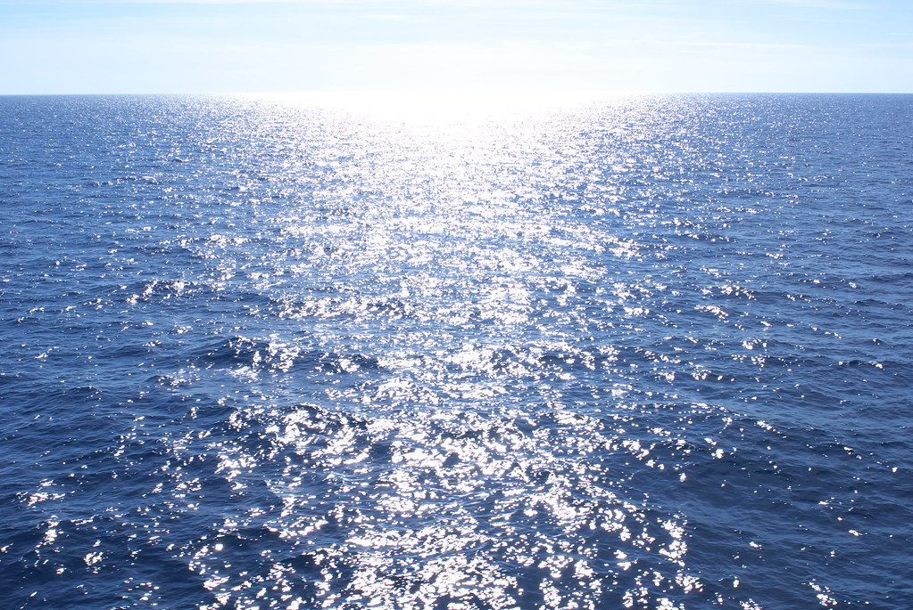

Lost in the Sea..
Image 2
JPG: Joint Photographic Experts Group

This second image I chose is a JPG file. It stands for Joint Photographic Experts Group. I've learned that JPG files are easily opened with most operating systems. I chose this image because it reminds me of when I went to visit the Mediterranean Sea. I saw nothing but water!